User Guide
Everything you need to get started with CrackingInterview.
1. Getting Started
Prerequisites
- Google Chrome must be installed on your computer. The app connects to Chrome to read tabs and extract content.
macOS Permissions
On first launch, macOS will ask you to grant permissions. Go to System Settings → Privacy & Security and enable:
- Accessibility — Required for global hotkeys to work system-wide.
- Screen & System Audio Recording — Required for screenshot capture, display capture, and audio recording.
Windows Permissions
On Windows, allow the app through Windows Security / SmartScreen when prompted on first launch. No additional system permissions are required.
First Steps
1 Create an account — Open the app and sign up with your email and password.
2 Sign in — Enter your credentials. Check "Remember me" to pre-fill your password next time.
3 Open Chrome — Click "Open Chrome" in the header bar. This launches a Chrome window connected to the app.
4 Navigate to a problem — In the Chrome window, go to a coding problem page.
5 Select your input source — Use the Input Source dropdown to pick the Chrome tab.
6 Hit Solve! — Click the Solve button and wait for the AI response.
Always on Top & Stealth Mode
The app window always stays on top of other windows so your AI assistant is always visible. It also runs in stealth mode — hidden from screen-sharing apps (Zoom, Teams), screenshots, Dock (macOS), and Taskbar (Windows).
2. Opening Chrome
CrackingInterview connects to Google Chrome through a special debugging protocol. Chrome must be installed — just click the "Open Chrome" button in the header.
- The app opens a separate Chrome window (it won't interfere with your regular Chrome sessions).
- Once connected, the header shows "Chrome Ready" with a green indicator.
- Navigate to any website in that Chrome window.
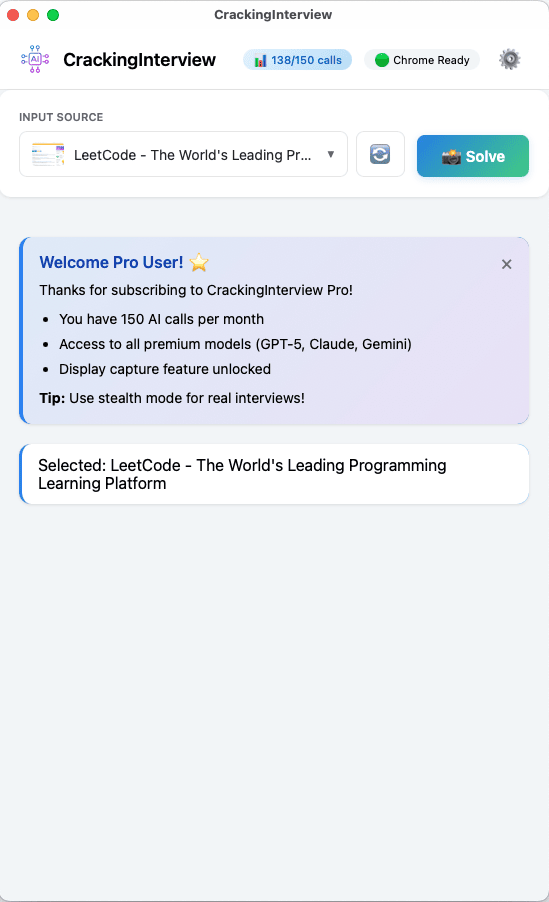
Main screen — Chrome Ready, input source selected
Tip: After Chrome opens and loads a page, click the refresh button next to the Input Source dropdown to update the list of available tabs.
3. Selecting an Input Source
The Input Source dropdown shows all available sources:
- Chrome Tabs — Any open tab in the connected Chrome window (shows title + thumbnail)
- Displays — Your screen(s) for full-screen capture (Pro only)
- Audio (System) — Record system audio and microphone (Pro only)
Select the source you want to analyze, then click Solve.
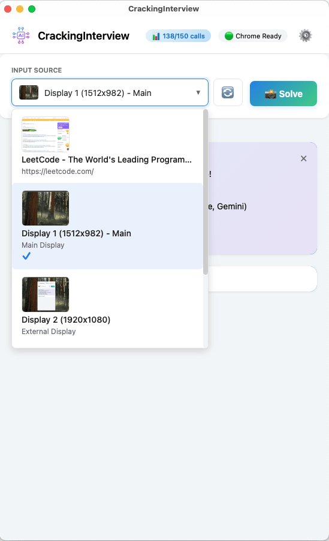
Input source dropdown — Chrome tabs, displays
Tip: If you opened new tabs or navigated to a new page, press the refresh button to update the list.
4. Solving — Text Extraction
This is the default mode. The app extracts the text content from the selected Chrome tab and sends it to AI.
1 Select a Chrome tab from the Input Source dropdown.
2 Make sure "Text Extraction" is selected in Settings → Input Mode.
3 Click Solve (or press Cmd+1).
The progress stepper shows: Extract → Asking AI, along with the AI model and prompt being used. Once complete, the explanation and solution appear.
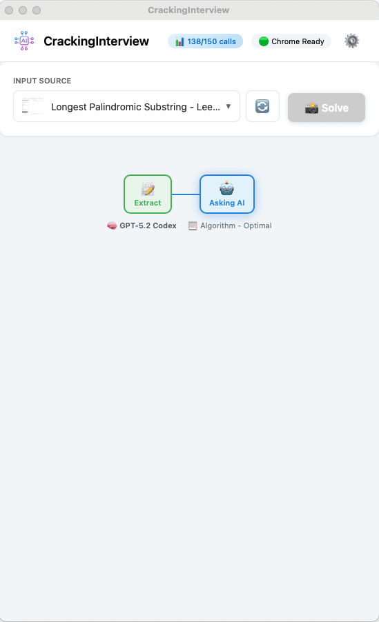
Progress stepper — shows model and prompt
5. Solving — Screenshot
Screenshot mode captures a visual image of the tab or display and sends it to AI. Useful when the problem includes images, diagrams, or complex formatting.
1 Select your input source (Chrome tab or Display).
2 Select "Screenshot Capture" in Settings → Input Mode — or press Cmd+2.
3 Click Solve (or press Cmd+2).
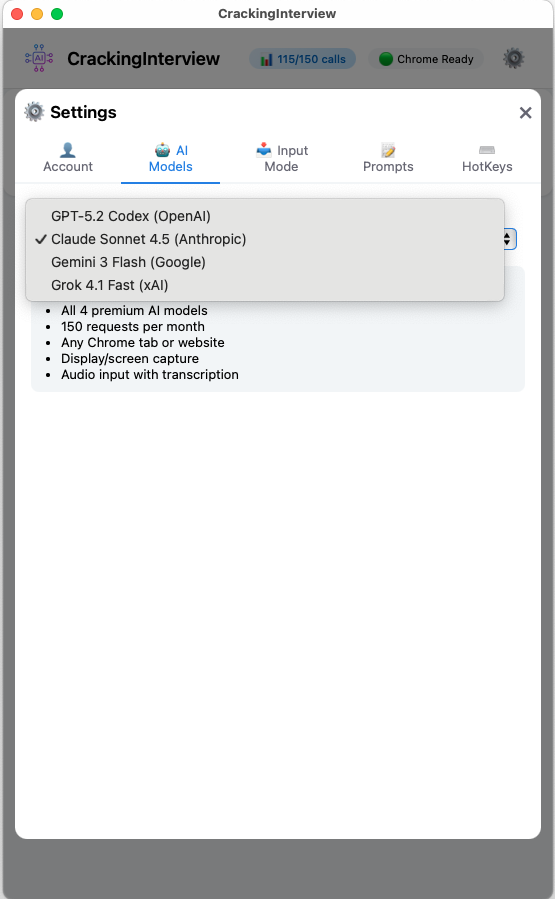
Settings → Input Mode
Tip: If your input source is a Display, the app always uses screenshot mode automatically, even if Text Extraction is selected.
6. Solving — Audio Recording (Pro)
Audio mode records system audio (e.g., from a Zoom or Teams call) and sends the recording to AI for analysis. Designed for verbal interview practice.
1 Select "Audio (System)" from the Input Source dropdown.
2 The app automatically selects the "Verbal Interview" prompt.
3 Click Record (or press Cmd+3) to start recording.
4 The timer shows recording duration. Speak or let the audio play.
5 Click Stop (or press Cmd+3 again) to stop and send to AI.
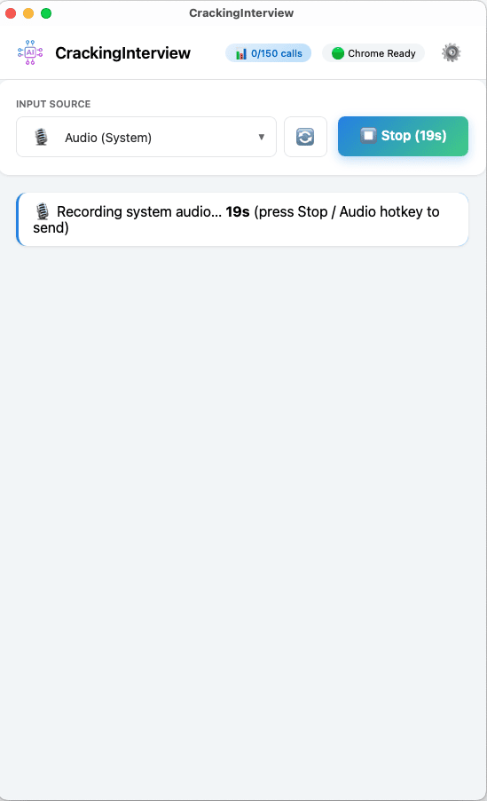
Recording system audio (19s)
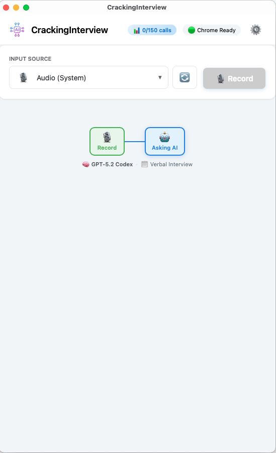
Audio stepper — Record → Asking AI
Note: Audio recording has a 3-minute maximum. The recording automatically stops and sends to AI after 3 minutes. Audio is a Pro-only feature.
7. Reading AI Responses
After the AI processes your request, you'll see two sections:
- Explanation — A concise walkthrough of the approach, algorithm, and complexity analysis. Click the header to collapse/expand.
- Solution — The complete code solution with syntax highlighting. Click "Copy Code" to copy it to your clipboard.
Both sections can be closed with the ✕ button. They automatically reappear when you run a new Solve.
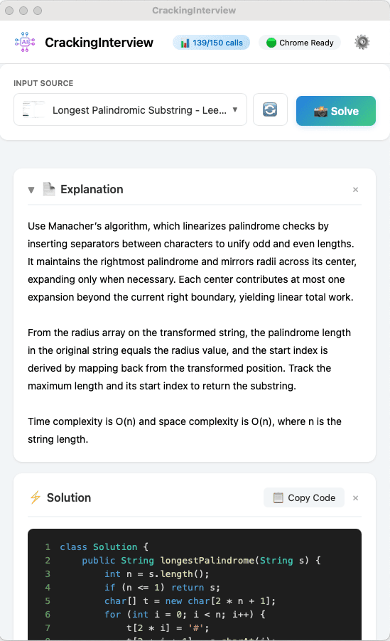
Explanation + Solution start
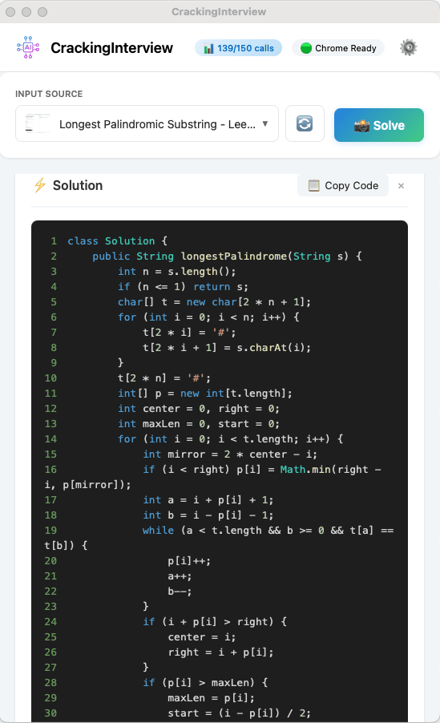
Full solution code (scrolled)
8. System Design Mode
The System Design prompt generates comprehensive designs with rendered diagrams — not just text. Select "System Design" in Settings → Prompts, then Solve using a screenshot of the design problem.
The AI returns:
- Explanation — Functional & non-functional requirements, key trade-offs
- Design — Rendered architecture diagrams, ER data models, sequence flows, and a scaling strategy
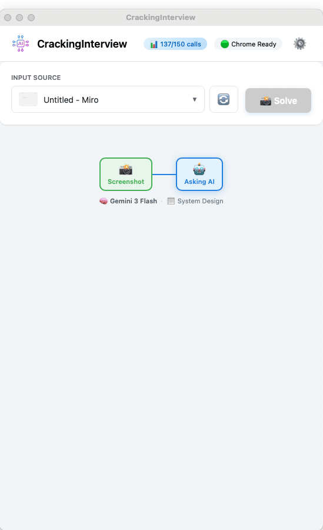
Screenshot → Asking AI (System Design prompt)
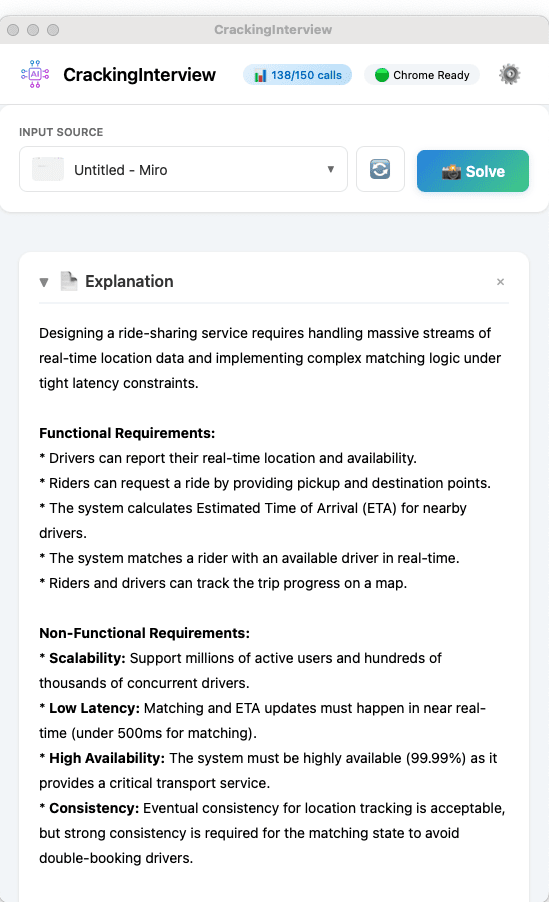
Requirements analysis (Explanation)
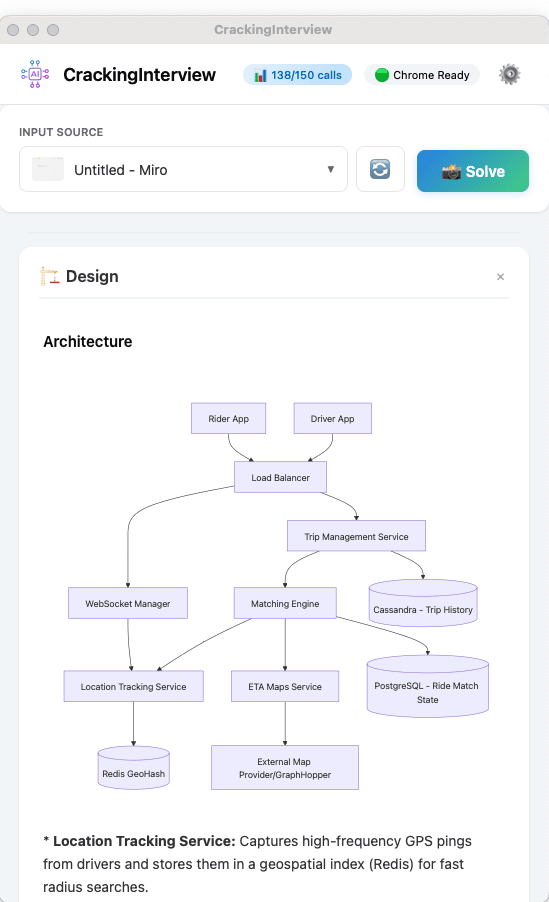
Architecture diagram
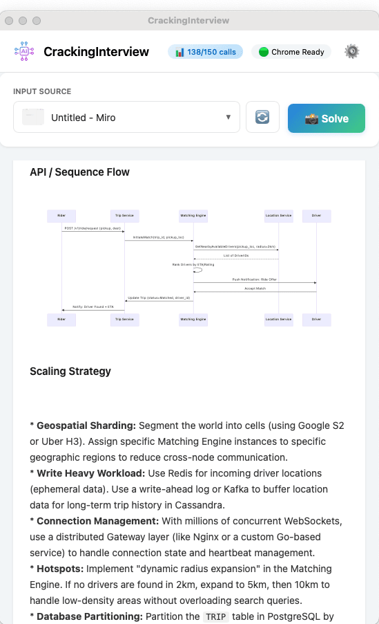
Sequence flow + Scaling strategy
9. Global Hotkeys
Hotkeys work even when the app is in the background, so you can trigger actions without switching windows.
| Default Shortcut |
Action |
| Cmd+1 |
Extract text → Solve |
| Cmd+2 |
Screenshot → Solve |
| Cmd+3 |
Start/Stop audio recording → Solve |
| Cmd+Up / Down |
Scroll explanation up/down |
| Cmd+Shift+Arrow |
Move the app window |
| Cmd+Shift+H |
Show/Hide the app window |
| Cmd+Shift+Q |
Quit the app |
All hotkeys are customizable in Settings → HotKeys. On Windows, Cmd is replaced with Alt.
Tip: Use Cmd+Shift+H to quickly hide/show the app while working in Chrome. Hotkeys work globally — no need to switch windows.
10. Custom Prompts
Prompts control how the AI analyzes your problem. The app comes with 6 built-in prompts:
- Algorithm - Optimal — Finds the most efficient solution
- Algorithm - Beginner — Explains in simpler terms
- System Design — Generates architecture diagrams, data models, and scaling plans
- Code Review — Reviews and improves existing code
- Explain Concept — Explains algorithms and concepts
- Verbal Interview — For audio-based interview practice
Editing a Prompt
Go to Settings → Prompts and click "Edit" on any prompt. You can customize the system instructions and user template. Use {CONTENT} as a placeholder for the extracted text and {LANGUAGE} for the programming language.
Creating a Custom Prompt
Click "+ New Prompt" to create your own. You can have up to 3 custom prompts.
Programming Language
Select your preferred language in Settings → Prompts. Available: Java, Python, JavaScript, C++, Swift, Go, PHP, Ruby, SQL.
11. Settings
Click the gear icon in the header to open Settings. Tabs include:
- Account — Subscription status, usage quota, manage billing, sign out
- AI Models — Choose which AI model to use. Free users can enter their own API key
- Input Mode — Switch between Text Extraction and Screenshot Capture
- Prompts — Select, edit, create, and manage prompts. Choose your programming language
- HotKeys — Customize all keyboard shortcuts
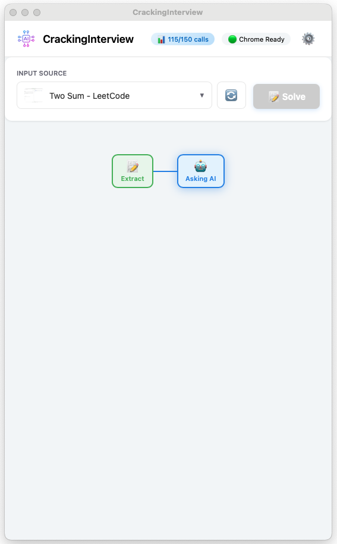
Settings → AI Models
12. Free vs Pro
| Feature |
Free |
Pro |
| AI calls |
3 calls (or unlimited with your own API key) |
Monthly quota included |
| AI models |
1 model (or your own via API key) |
All premium models |
| Input sources |
Chrome tabs only |
Chrome tabs, Display, Audio |
| Websites |
Coding practice sites only |
Any website |
| Text Extraction |
✓ |
✓ |
| Screenshot Capture |
✓ (Chrome tabs) |
✓ (Chrome tabs + Display) |
| Audio Recording |
✗ |
✓ |
| System Design Diagrams |
✓ |
✓ |
| Custom Prompts |
✓ |
✓ |
| Global Hotkeys |
✓ |
✓ |
| Always on Top |
✓ |
✓ |
| Stealth Mode |
✓ |
✓ |
To upgrade, go to Settings → Account and click "Upgrade to Pro".
13. Using Your Own API Key (Free Users)
Free users can bring their own API key to get unlimited AI calls:
1 Go to Settings → AI Models.
2 Enter your API key in the provided field.
3 Click Save. The app will use your key for all AI requests.
Note: Your API key is stored locally on your device only. We never send it to our servers. You are responsible for any charges from the API provider.
14. Troubleshooting
"Open Chrome" button doesn't connect
- Make sure Google Chrome is installed on your computer.
- Make sure no other application is using debugging port 9222.
- Try closing all Chrome windows and clicking "Open Chrome" again.
Screenshot or audio capture not working (macOS)
- Go to System Settings → Privacy & Security → Screen & System Audio Recording and enable CrackingInterview.
- You may need to restart the app after granting this permission.
Input Source dropdown is empty
- Click the refresh button next to the dropdown.
- Make sure Chrome is connected (header shows "Chrome Ready").
- Open at least one tab in the Chrome window.
AI response is slow or fails
- Check your internet connection.
- If using your own API key, verify it's valid and has available quota.
- Try selecting a different AI model in Settings → AI Models.
- Complex problems (especially System Design with screenshots) may take longer — the app has a 50-second timeout.
"Domain not allowed" error (Free users)
- Free tier is limited to supported coding practice websites.
- Navigate to a supported site in the Chrome window.
- Upgrade to Pro for access to any website.
Audio recording doesn't work
- Audio is a Pro-only feature. Make sure you have an active Pro subscription.
- On macOS, grant Screen & System Audio Recording permission in System Settings.
- Make sure system audio is playing (the app records what your computer outputs).
Hotkeys don't work
- On macOS, go to System Settings → Privacy & Security → Accessibility and enable CrackingInterview.
- You may need to restart the app after granting this permission.
- Check for conflicts with other apps using the same shortcuts.
Still need help? Contact us at support@crackinginterview.org